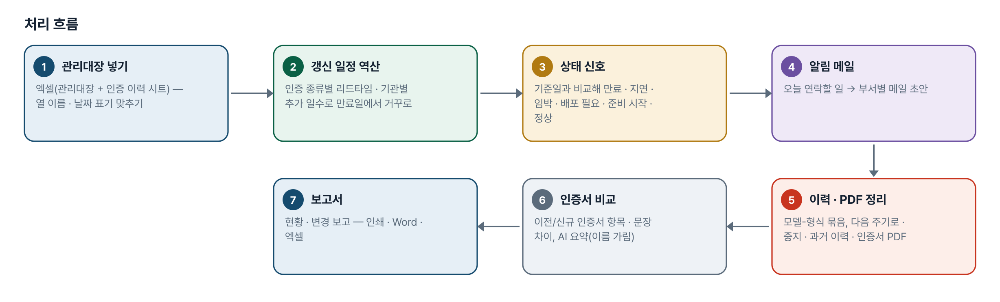
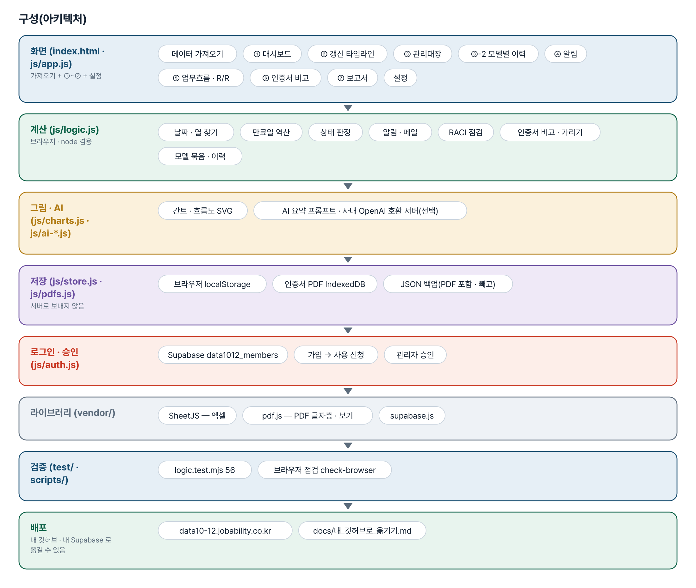
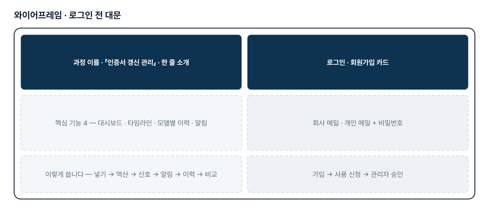
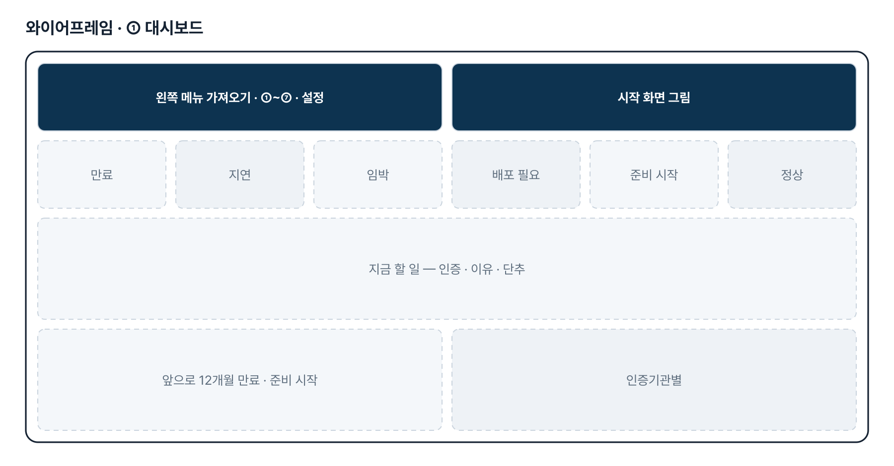
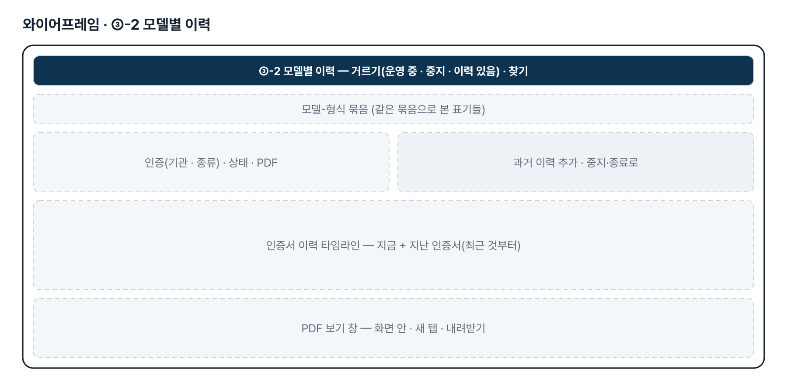
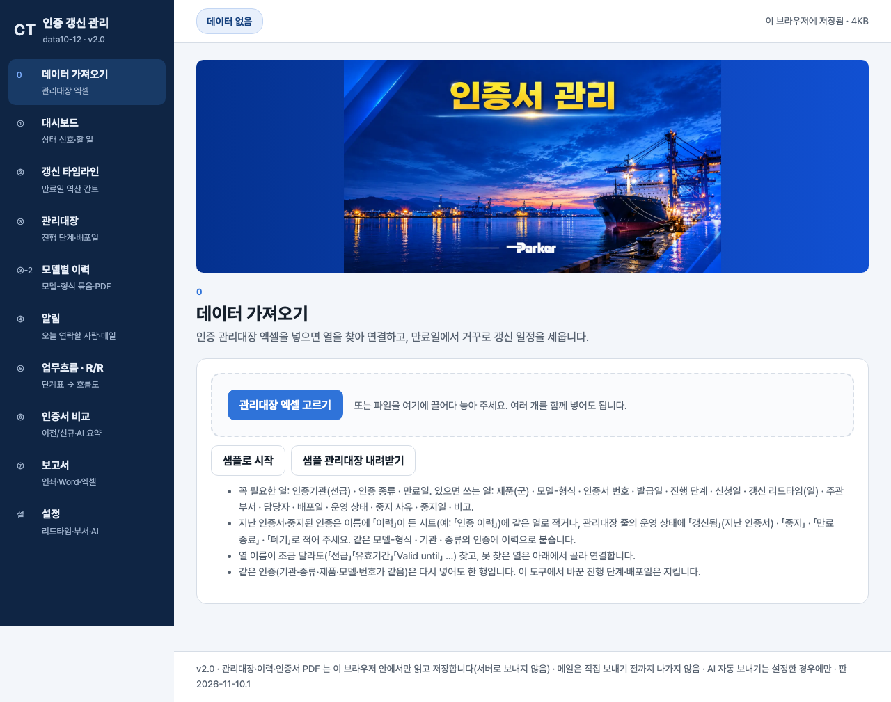

기획서 내려받기
파이프라인 · 아키텍처 · 와이어프레임 · 개발일지가 들어간 워드 문서입니다. 버전마다 따로 남깁니다.
| 버전 | 날짜 | 바뀐 점 | 파일 |
|---|---|---|---|
| v2.0 | 2026-11-10 | 최종 기획서 — 파이프라인 · 아키텍처 · 와이어프레임 정리 / 로그인 · 사용 신청 · 관리자 승인(요청자 Supabase 로 옮길 수 있게) / 로그인 전 대문 | 워드 내려받기 |
요구사항과 구현
| 기획서 요구 | 구현 |
|---|---|
| 업무흐름도(관련부서 R/R 포함) | 단계표(RACI)를 고치면 부서별 줄 흐름도가 다시 그려짐, SVG 내려받기 · RACI 규칙 점검 |
| 실시간 관리대장 비주얼화(준비 · 기관 피드백 감안 Lead-Time) | 인증 종류별 리드타임 · 기관별 추가 일수로 만료일 역산 → 대시보드 상태 신호 · 갱신 타임라인(간트) |
| 영업 · 품질 · 개발 Alert | 오늘 연락할 사람(인증마다 가장 최근의 끝나지 않은 일) · 부서별 메일 초안(메일 앱 · 복사). 자동 발송은 2단계 |
| 이전/신규 인증서 변경 요약 · 보고서 | PDF 글자층 · 붙여 넣기 → 항목 · 문장 · 낱말 비교, AI 요약 프롬프트(회사명 · 메일 · 전화 · 번호 가림), 보고서 인쇄 · Word · 엑셀 |
| 운영 중 인증의 과거 이력(10-27) | ③-2 「과거 이력 추가」 · 엑셀 「인증 이력」 시트 · 다음 주기로 넘기기 |
| 중지된 인증의 이력(10-27) | 운영 상태 중지 · 만료 종료 · 폐기 + 사유 · 중지일 — 알림 · 건수에서 빠지고 이력에 남음 |
| 인증서 PDF 올려 보기(10-27) | 인증 · 이력 줄마다 PDF 한 장(IndexedDB, 15MB) — 화면 안 보기 · 새 탭 · 바꾸기 · 빼기 |
| 「모델-형식」 Key 로 그룹핑(10-27) | 띄어쓰기 · 대소문자 · 하이픈 모양을 무시한 묶음 키, ③-2 모델별 이력 화면 |
| 담당자 e-Mail 활용 | 2단계 — 메일에서 신청 · 피드백 날짜 뽑기 |
그림으로 보기






개발일지
2026-11-10 · 최종 기획서 · 로그인 · 대문
- 로그인 · 사용 신청 · 관리자 승인 키트(회원 표 data1012_members)
- 로그인 전 대문 문구를 기획서의 핵심 기능 · 처리 흐름에서
- 최종 기획서 v2.0(워드 · plan.html · 그림 · CHANGELOG), README 정리
- 시험 56개 통과, 이전 점검 통과
2026-11-08 · 시작 화면 그림
- 수강생이 보낸 「인증서 관리」 그림을 대시보드 · 가져오기 맨 위에(WebP + JPG)
- 높이를 화면의 34%(최대 360px)로 제한해 첫 단추가 첫 화면 안에
2026-10-27 · 2차 반영
- 운영 상태(운영 중 · 중지 · 만료 종료 · 폐기) · 이력 상태, 모델-형식 묶음 키
- ③-2 모델별 이력 화면, 인증서 PDF(IndexedDB), 엑셀 「인증 이력」 시트
- 로직 검사 55 · 브라우저 점검 67
2026-10-21 · 기획서 정리 · 1단계
- 가상 관리대장 22건과 인증서 한 쌍으로 화면 9개
- 만료일 역산 · 상태 신호 · 알림 메일 초안 · RACI 흐름도 · 인증서 비교 · 보고서
- 로직 검사 41